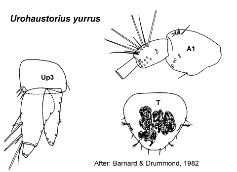

Urohaustorius yurrus Barnard & Drummond, 1982: 76, figs 25, 27.
Type Material. Lodged in the NMV.
Type Locality. Middle Banks, Moreton Bay, Queensland.
Description.Antenna 1 peduncular article 1 setal row with
some strong robust setae, proximal pair of setae simple; accessory
flagellum 1 -articulate; primary flagellum 7–9 -articulate. Antenna 2 peduncular article 4 proximal part of row evenly angled; peduncle article 5 not bulbous in male. Mandible right incisor simple; left incisor with 2 weak teeth. Maxilla 1 palp with some setae displaced subapically.
Gnathopod 1 coxa small, triangular, subequal in size to coxa 2. Gnathopod 2 minutely chelate. Pereopod 3 coxa large, larger than coxa 4. Pereopod 4 coxa quite large. Pereopod 5 basis without mediofacial brush of setae; dactylus with robust setae arranged in single row. Pereopod 6 basis fully expanded; dactylus well developed. Pereopod 7
coxa without long posterior spine; basis fully expanded, with slender
setae along posteroproximal margin; dactylus well developed.
Epimeron 2 more setose than epimeron 3. Uropod 1 inner ramus not fused to peduncle. Uropod 2 inner ramus not fused to peduncle. Telson subequal in length and breadth or broader than long, entire.
Distribution.Australia: Moreton Bay, Queensland.

___________________________
This
publication should be cited as: Kilgallen, N.M. & Lowry, J.K. 2008.
Urohaustoriidae (Amphipoda): World Genera and Species. Version 1. 1
January 2008. https://crustacea.net.